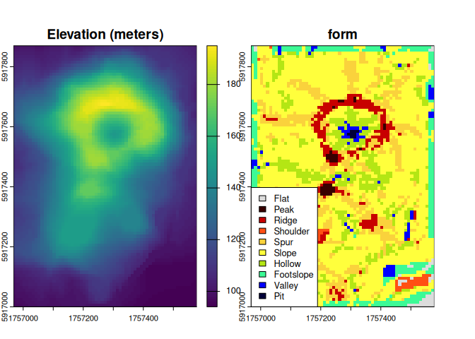

A fast and low-dependency implementation of the ‘geomorphon’ terrain form classification algorithm of Jasiewicz and Stepinski (2013) based largely on the ‘GRASS GIS’ ‘r.geomorphon’ module.
This implementation employs a novel parallel algorithm, written in C++ and without external dependencies.
For the sake of simplicity, some GRASS-specific implementation details have not been added. See ?geomorphons for details.
Installation
You can install the development version of {rgeomorphon} like so:
# install.packages("remotes")
remotes::install_github("brownag/rgeomorphon")Volcano Example
This is a basic example using the classic R volcano dataset and {terra} SpatRaster object as input.
volcano is a 10m by 10m grid of elevation values from Maunga Whau in the Auckland volcanic field of New Zealand.
library(terra)
#> terra 1.8.56
library(rgeomorphon)
# PARAMETERS
SEARCH = 7 # outer search radius (cells)
SKIP = 0 # inner skip radius (cells)
FLAT = 1 # flat angle threshold (degrees)
# classic volcano elevation data
data("volcano", package = "datasets")
# construct and georeference a SpatRaster object
dem <- terra::rast(volcano)
terra::crs(dem) <- terra::crs("EPSG:2193")
terra::ext(dem) <- c(1756968, 1757578, 5917000, 5917870)
names(dem) <- "Elevation (meters)"
# calculate geomorphons "forms"
system.time({
rg <- geomorphons(
dem,
search = SEARCH,
skip = SKIP,
flat = FLAT
)
})
#> user system elapsed
#> 0.059 0.004 0.051
# inspect result
plot(c(dem, rg),
plg = list(x = "bottomleft",
bty = "o",
bg = "white"))
Salton Sea Example
Now we will do a bathymetry example using the built in Salton Sea dataset (salton).
See help("salton") for details.
library(terra)
library(rgeomorphon)
# PARAMETERS
SEARCH = 10 # outer search radius (cells)
SKIP = 3 # inner skip radius (cells)
FLAT = 0.1 # flat angle threshold (degrees)
# salton sea bathymetry sample data
data("salton", package = "rgeomorphon")
# construct and georeference a SpatRaster object
dem <- terra::rast(salton)
terra::crs(dem) <- attr(salton, "crs")
terra::ext(dem) <- attr(salton, "extent")
names(dem) <- "Elevation (feet)"
# calculate bathymorphons using 6-form system
system.time({
rg <- geomorphons(
dem,
search = SEARCH,
skip = SKIP,
flat = FLAT,
forms = "forms6"
)
})
#> user system elapsed
#> 0.100 0.001 0.083
# inspect result
plot(c(dem, rg),
plg = list(x = "bottomleft",
bty = "o",
bg = "white",
cex = 0.85))
Citation
citation("rgeomorphon")
#> To cite package 'rgeomorphon' in publications use:
#>
#> Brown A (2025). _rgeomorphon: A Lightweight Implementation of the
#> 'Geomorphon' Algorithm_. R package version 0.1.0,
#> <https://github.com/brownag/rgeomorphon/>.
#>
#> Jasiewicz J, Stepinski T (2013). "Geomorphons - a pattern recognition
#> approach to classification and mapping of landforms."
#> _Geomorphology_, *182*, 147-156. doi:10.1016/j.geomorph.2012.11.005
#> <https://doi.org/10.1016/j.geomorph.2012.11.005>.
#>
#> Jasiewicz J, Stepinski T, GRASS Development Team (2024). _Geographic
#> Resources Analysis Support System (GRASS) Software, Version 8.3_.
#> Open Source Geospatial Foundation, USA. r.geomorphon module,
#> <https://grass.osgeo.org/grass-stable/manuals/r.geomorphon.html>.
#>
#> To see these entries in BibTeX format, use 'print(<citation>,
#> bibtex=TRUE)', 'toBibtex(.)', or set
#> 'options(citation.bibtex.max=999)'.